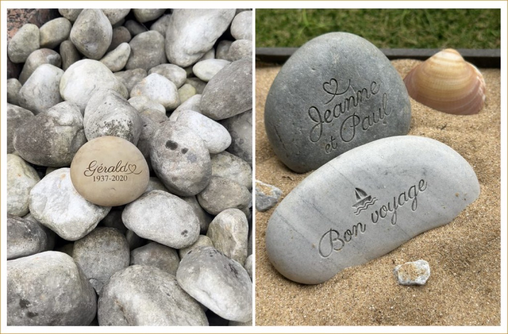
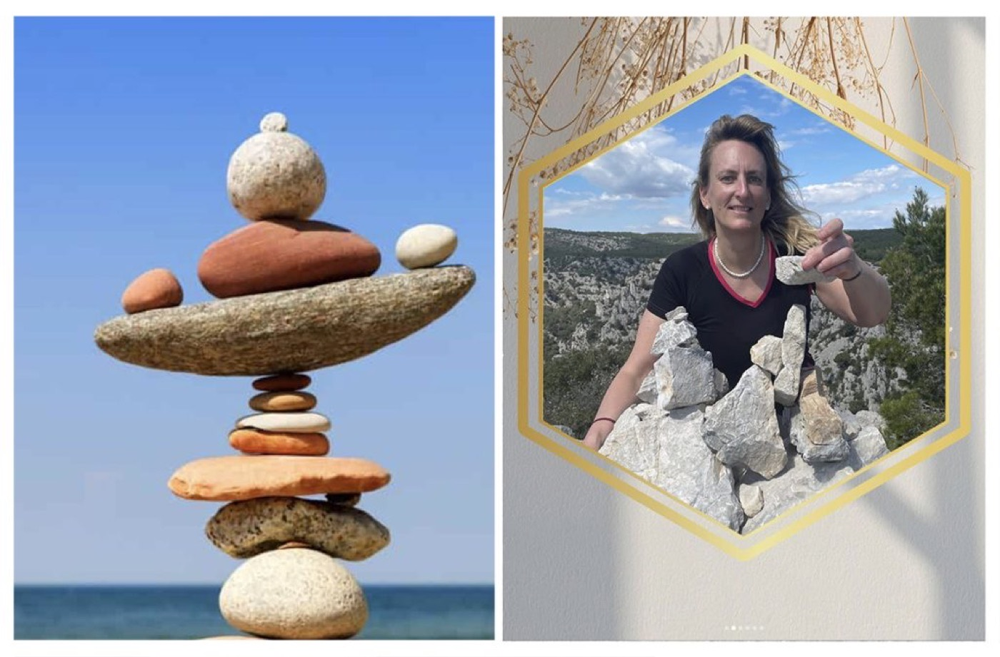

Simples, naturels et intemporels, les galets sont présents dans les rivières, sur les plages et les chemins du monde entier. Au-delà de leur forme douce et apaisante, ils portent une symbolique forte : celle du souvenir et du passage.
Le galet, une mémoire façonnée par le temps
Un galet n’est pas une pierre comme les autres. Il est le résultat d’un long travail naturel : l’eau, les chocs et les années l’ont poli jusqu’à lui donner sa forme douce. Il symbolise ainsi le temps qui passe, mais aussi ce qui reste malgré les transformations.

Les cairns : laisser une trace sur les chemins
Sur les sentiers de montagne ou les chemins de pèlerinage comme le Chemin de Saint-Jacques-de-Compostelle, les voyageurs empilent parfois des galets pour former des cairns. Ce geste simple signifie souvent : “je suis passé ici” ou “je laisse une trace”. Il relie les personnes entre elles, même sans se connaître.
Amatrice de randonnée, j’ai souvent été touchée par ces cairns, symboles de passage, de témoignage et d’inspiration au cœur de la nature.

Un symbole universel du souvenir
Dans de nombreuses cultures, la pierre est associée à la mémoire, à la stabilité et à la transmission. On retrouve ce symbole dans les jardins zen au Japon, dans les traditions celtiques ou encore dans les gestes contemporains de recueillement.
Le galet devient alors un support discret, mais profondément chargé de sens.
Un lien naturel avec la mémoire
Dans les rivières comme dans les lieux de mémoire, le galet évoque à la fois le mouvement et la permanence. Il traverse le temps sans se briser, tout en gardant la trace de son histoire.
C’est cette simplicité qui en fait un symbole universel du souvenir.